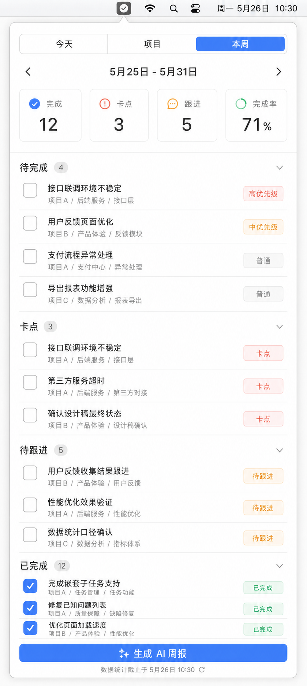
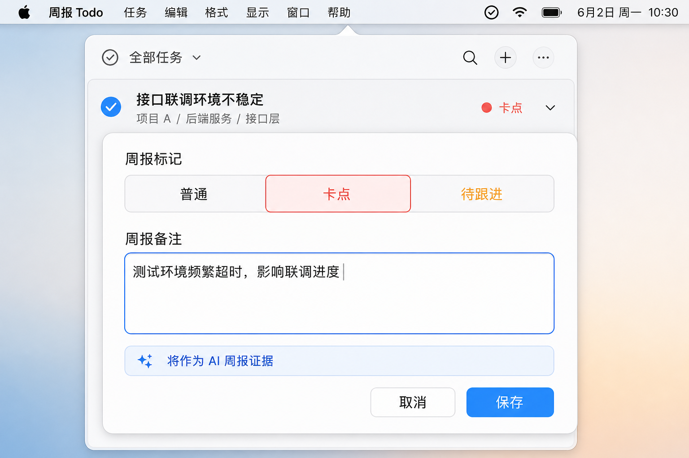
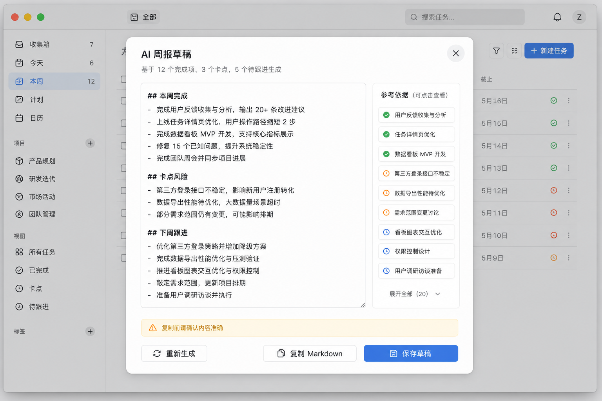

Product Requirements Document
AI 周报与周任务视图
在现有「今天 / 项目」待办工作流上新增「本周」视图，让周报来自真实任务记录：自动聚合完成项、卡点和待跟进事项，并生成可复核、可编辑、可复制的 Markdown 周报草稿。

目标与范围
核心目标
少写
用户不再从零整理周报，只维护日常任务和少量周报标记。
可信来源
可追溯
每段 AI 总结都能回到任务、项目路径和备注证据。
交付形态
草稿
第一版只生成可编辑草稿，不自动发送或同步到外部系统。
本期包含
- 新增「本周」顶层视图，默认统计周一到周日。
- 任务和项目步骤支持「普通 / 卡点 / 待跟进」标记与一句备注。
- 应用内 AI 生成 Markdown 周报，用户可编辑、重新生成、复制。
- 支持选择大模型厂商，首期包含 OpenAI、阿里云百炼、阿里云 Coding Plan 与 DeepSeek；模型名与服务地址可手动填写。
- 大模型配置与 API Key 使用 macOS Keychain 保存，不写入本地任务数据库。
本期不包含
- 负责人、优先级、截止日期等重项目管理字段。
- 周报自动发送、定时生成、团队协作或外部同步。
- 多模板体系；第一版固定三段式 Markdown。
- 跨设备云同步或账号体系。
信息架构
顶层导航从「今天 / 项目」扩展为「今天 / 项目 / 本周」。三者职责保持清晰：今天用于执行，项目用于拆解长期目标，本周用于复盘、跟进和生成周报。
1. 记录任务
在今天或项目中继续记录任务和步骤。
2. 标记证据
对关键任务补充卡点、待跟进和备注。
3. 查看本周
按自然周聚合完成、卡点和待跟进。
4. 生成草稿
AI 基于结构化任务上下文生成三段式周报。
5. 复核复制
用户编辑确认后复制 Markdown 对外发送。
原型与交互

任务标记：用轻量标签和备注提升 AI 周报准确度。
本周主视图
- 顶部显示自然周范围，支持上一周/下一周切换，默认停留当前周。
- 指标区展示完成数、卡点数、待跟进数、完成率。
- 任务证据列表按「待完成 / 卡点 / 待跟进 / 已完成」分组。
- 任务行保留项目路径，减少 AI 输出时丢失背景。
- 主按钮为「生成 AI 周报」，生成后进入草稿弹层。
周报草稿弹层
- 弹层标题为「AI 周报草稿」，展示本次生成基于多少完成项、卡点和待跟进。
- 正文为可编辑 Markdown 文本区，固定三段：「本周完成」「卡点风险」「下周跟进」。
- 侧边或正文下方展示参考依据，用户能回看 AI 使用了哪些任务。
- 操作包含「重新生成」「复制 Markdown」「保存草稿」。
- 复制前提示用户确认内容准确，避免把 AI 草稿当成最终事实。

AI 草稿：默认可编辑，用户复核后再复制。
数据与 AI 方案
建议新增数据
| weeklyReportStatus | 枚举：normal、blocker、followUp。默认 normal，用于本周分组和 AI 分类。 |
|---|---|
| weeklyReportNote | 可选字符串。一句话说明背景、影响或后续动作，作为 AI 周报证据。 |
| completedAt | 沿用现有完成时间。已完成任务按完成时间进入对应自然周。 |
| project path | 沿用现有项目/步骤路径，输出上下文如「项目 A / 后端服务 / 接口层」。 |
AI 上下文结构
weekRange:
start: 2026-05-25
end: 2026-05-31
completed:
- title
- projectPath
- completedAt
blockers:
- title
- projectPath
- weeklyReportNote
followUps:
- title
- projectPath
- weeklyReportNote
output:
format: Markdown
sections:
- 本周完成
- 卡点风险
- 下周跟进
生成原则
AI 只基于本周结构化任务上下文生成，不编造项目、时间、负责人或结果。没有证据的内容不写入草稿；备注为空时，AI 可以使用任务标题和项目路径做简短归纳，但不得扩展未记录的事实。
错误状态与隐私
未配置
缺少大模型配置
生成按钮可见但提示配置入口。厂商、模型名与 Key 存入 macOS Keychain，不进入任务 JSON。
失败
网络或鉴权失败
显示可理解的失败原因，不清空任务、备注或现有草稿。
可恢复
重新生成
重新生成前保留当前草稿，避免覆盖用户已编辑内容。
默认不自动发送周报。所有 AI 输出均为草稿，复制前需要用户确认内容准确。
验收标准
- 周一到周日范围统计正确，跨周任务不误入本周。
- 已完成任务按
completedAt进入「本周完成」。 - 标记为卡点或待跟进的任务进入对应分组，并带项目路径和备注。
- 未配置大模型厂商/API Key 时不能生成，显示配置入口。
- 大模型配置支持 OpenAI、阿里云百炼、阿里云 Coding Plan 与 DeepSeek，模型名和服务地址可按用户实际账号权限调整。
- AI 生成成功后展示 Markdown 草稿，支持编辑、重新生成、复制。
- 网络或 API 失败时保留用户数据，不清空已有草稿。
- 周报输出固定三段：「本周完成」「卡点风险」「下周跟进」。
- PRD 第一版不引入负责人、优先级、截止日期、自动发送或团队同步。